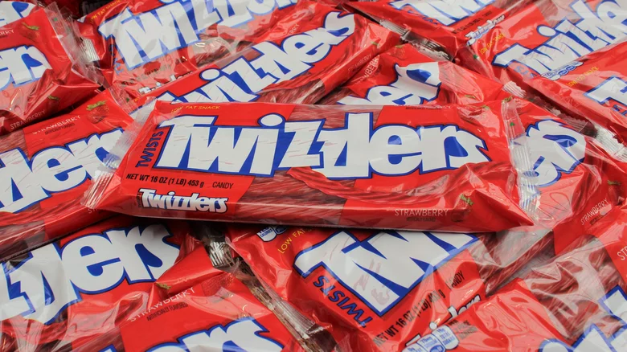
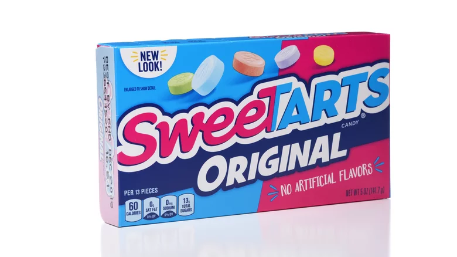
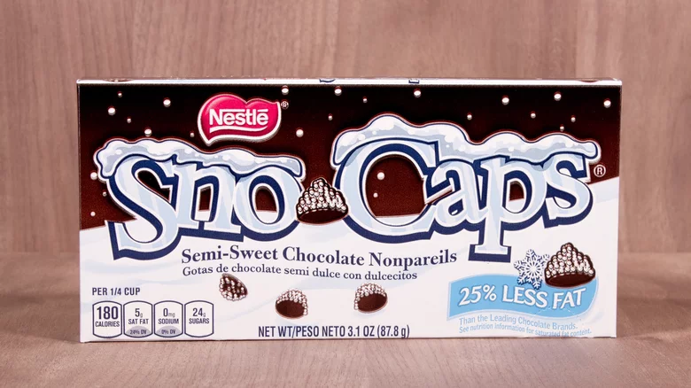
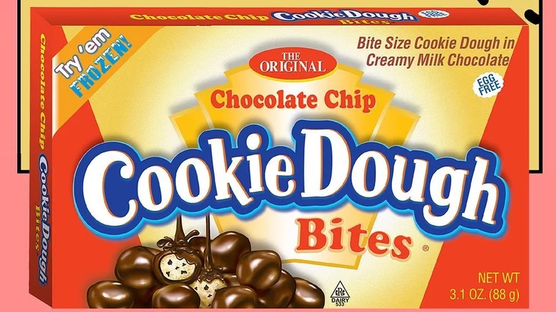
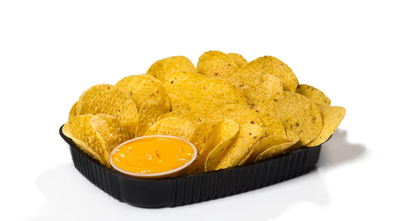
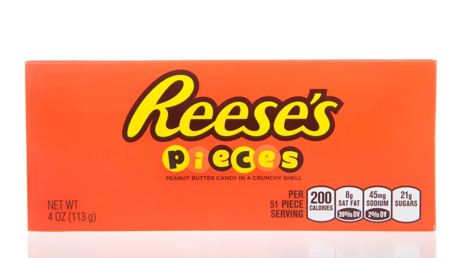

Snacks



Twizzlers vs. Red Vines is a heated debate among candy fans, with people on both sides of the divide arguing for the superiority of their preferred waxy, red pseudo-licorice. The clash between team Twizzler and team Red Vine obscures the most important fact about these twisty confections: They're both trash.
Read More: https://www.mashed.com/616851/movie-theater-snacks-ranked-worst-to-best/?utm_campaign=clip
The flavor of SweeTarts isn't the issue here. Although every color tastes exactly the same (and nothing like the fruit flavors they're alleged to represent), they have a satisfying level of sourness that doesn't go overboard into stunt territory. No, the real problem with these is their chalky mouthfeel.
Read More: https://www.mashed.com/616851/movie-theater-snacks-ranked-worst-to-best/?utm_campaign=clip
Nestle Sno-Caps are an old-fashioned type of candy called a nonpareil. According to Merriam-Webster, nonpareil means "having no equal," so the name of these candies suggests that their taste is unmatchable. Maybe if they had a less arrogant name, they would benefit from lower expectations. Unlike many movie candies, Sno-Caps are made with semi-sweet rather than milk chocolate. We love a nice, bittersweet dark chocolate, but the cheap stuff in Sno-Caps doesn't have much flavor.
Read More: https://www.mashed.com/616851/movie-theater-snacks-ranked-worst-to-best/?utm_campaign=clip



We've all heard that eating raw cookie dough might not be the safest snacking option, but it tastes even better than baked cookies so it's difficult to say no. Cookie Dough Bites promise to give us all the flavor of cookie dough without the potential for salmonella or E. coli poisoning. They should be incredible, which makes their mediocrity profoundly disappointing. By removing eggs and raw flour, Cookie Dough Bites also remove everything worthwhile about the dough-eating experience.
Read More: https://www.mashed.com/616851/movie-theater-snacks-ranked-worst-to-best/?utm_campaign=clip
Movie theaters are not restaurants. They don't normally have full kitchens, and their food options are limited to whatever bored teenage employees won't screw up. Thus, the nachos at the movies are usually simplified down to a mound of tortilla chips with a cup of fake nacho cheese sauce on the side. We're not here to talk trash about nacho cheese, which is quite tasty despite its unnatural neon color and suspiciously gelatinous texture.
Read More: https://www.mashed.com/616851/movie-theater-snacks-ranked-worst-to-best/?utm_campaign=clip
Reese's Peanut Butter Cups are one of the few perfect candies: an impeccable balance of sweet, salty, and fatty. Reese's nailed the peanut butter and chocolate combination so well with its original product that any deviation from the formula is doomed to suffer by comparison. Such is the fate of Reese's Pieces, a totally adequate candy that is nevertheless significantly inferior to a Reese's Cup.
Read More: https://www.mashed.com/616851/movie-theater-snacks-ranked-worst-to-best/?utm_campaign=clip